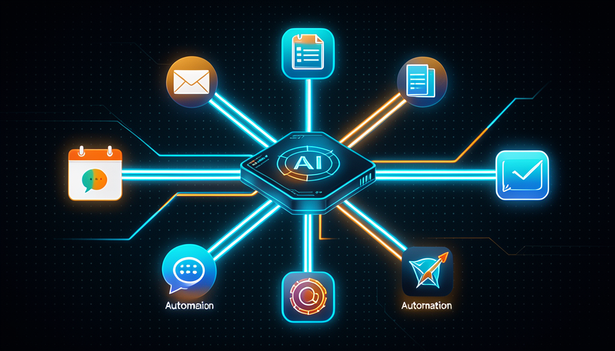

💡 Novo aqui? Três palavras antes de começar
- Automatizar — fazer uma tarefa acontecer sozinha, sem você apertar nada toda vez.
- MCP — uma "tomada universal" que liga a IA aos seus apps (e-mail, agenda, planilha). Você não precisa entender a sigla; só saber que é o cabo.
- Gatilho — o que faz a automação começar: um horário, um e-mail novo, um clique seu.
🔎 O que dá pra automatizar no seu dia
Antes de ligar qualquer cabo, vale parar e olhar pro seu dia. Onde você faz a mesma coisa toda semana, no piloto automático? Copiar dados de um lugar pro outro, responder o mesmo tipo de e-mail, montar o mesmo relatório — é aí que mora o ouro.
A regra é simples: tarefa repetida + previsível + com regras claras = ótima candidata. Tarefa rara ou que muda toda vez, nem tanto. Comece anotando 3 tarefas chatas que você faria de olhos fechados.
✓ Bons candidatos a automatizar
- ✓Resumir os e-mails do dia toda manhã
- ✓Salvar anexos numa pasta certa
- ✓Avisar no celular quando chega pedido novo
- ✓Montar o relatório semanal de sempre
✗ Maus candidatos (por enquanto)
- ✗Decisões que mudam toda vez
- ✗Conversa delicada com cliente
- ✗Algo que você faz 1 vez por ano
- ✗Tarefa sem regra clara de "certo"
💡 Dica prática
Na próxima semana, anote toda vez que pensar "ah, de novo isso". Cada "de novo" é um candidato. No fim da semana, escolha o mais frequente e mais chato — esse é o seu primeiro alvo.
Conceitos-chave
🔌 Conectar a IA aos seus apps (MCP na prática)
Sozinha, a IA é como um eletrodoméstico genial sem fio na tomada: faz coisas incríveis, mas não alcança o seu mundo. O MCP é exatamente esse fio — uma tomada universal que liga a IA ao seu e-mail, à sua agenda, à sua planilha.
A beleza é que você não precisa entender por dentro. Você só autoriza a conexão uma vez ("pode ler minha agenda"), e a partir dali pode mandar coisas como "veja o que tenho amanhã e me mande um resumo". A IA passa a ver e mexer nesses apps por você.
🔑 A ideia central
Pense numa régua de tomadas no meio da mesa:
- •A IA é o aparelho que quer trabalhar.
- •O MCP é a régua: cada buraco é um app seu.
- •Você decide quais cabos plugar — e pode tirar quando quiser.
💡 Dica prática
Comece ligando um app só — o que mais te dá trabalho. Conectar tudo de uma vez confunde. Domine uma conexão, ganhe confiança, e só então acrescente a próxima.
Conceitos-chave
⚡ Gatilhos: o que faz a automação disparar
Conectar os apps é metade. A outra metade é responder: quando a IA deve agir? Esse "quando" é o gatilho — o estopim que faz tudo começar sem você precisar mandar na hora.
Existem três tipos fáceis de entender. Cada automação começa por um deles. Veja a linha do tempo de como um gatilho funciona:
⏰ Por horário
"toda manhã às 8h"
A automação roda num horário fixo. Bom pra resumos diários e relatórios semanais.
📬 Por evento
"quando chegar e-mail novo"
Algo acontece e a IA reage na hora. Bom pra avisos e respostas automáticas.
👆 Por você (manual) MAIS SEGURO PRA COMEÇAR
"quando eu apertar o botão"
Você dispara na mão. Ideal pra testar com calma antes de soltar pro automático.
🎯 O padrão pra notar
Comece manual, ganhe confiança, depois troque pro automático (horário ou evento). Soltar no automático antes de confiar é o erro número 1 de quem está começando.
Conceitos-chave
🔗 Um fluxo ponta a ponta simples
Agora juntamos tudo numa sequência: um gatilho dispara, a IA faz o trabalho, e o resultado vai parar no lugar certo. Esse trio — gatilho → IA → entrega — é o coração de toda automação. Olhe o desenho:
A imagem abaixo mostra a mesma ideia de outro jeito: a IA no centro, conectada ao seu mundo, transformando entrada em entrega. É exatamente o que você vai montar a seguir.

🧪 Monte seu primeiro fluxo (5 minutos)
Objetivo: descrever uma automação completa em 3 passos, pronta pra você montar. Cole o texto abaixo no Claude (com seus apps conectados), trocando os trechos entre < >.
Quero montar uma automação simples em 3 passos. 1) GATILHO: começar <quando, ex: toda manhã às 8h>. 2) IA FAZ: <a tarefa, ex: ler meus e-mails não lidos e resumir os 3 mais importantes>. 3) ENTREGA: mandar o resultado para <onde, ex: uma mensagem no meu WhatsApp/Telegram>. Antes de montar, me liste o que você precisa que eu autorize, e como vou testar se funcionou na 1ª vez.
Como saber que deu certo: a IA deve confirmar o gatilho, o que vai fazer e onde entrega — e te pedir só os acessos necessários. Rode uma vez no manual antes de deixar no automático.
Conceitos-chave
🔒 Segurança e permissões (o básico)
Ligar a IA aos seus apps é poderoso — e por isso pede um pouco de cuidado. A regra de ouro é o acesso mínimo: dê só o que a tarefa precisa, nem um buraco a mais. Se a automação só lê e-mail, ela não precisa poder apagar nada.
Pense como você faz com um ajudante novo: começa dando pouca chave, observa, e só amplia quando confia. Com a IA é igual. E ações que mexem de verdade (enviar, pagar, apagar) merecem um "confirma?" antes.
✓ Hábitos seguros
- ✓Dar só o acesso que a tarefa exige
- ✓Pedir confirmação pra ações que mexem
- ✓Testar em algo pequeno antes
- ✓Revisar de vez em quando o que está ligado
✗ Riscos a evitar
- ✗Dar acesso total "pra facilitar"
- ✗Deixar apagar/enviar sem confirmar
- ✗Conectar tudo de uma vez sem testar
- ✗Esquecer conexões antigas ligadas
💡 Dica prática
Antes de autorizar qualquer conexão, faça três perguntas: "O que ela vai conseguir ver? O que ela vai conseguir mudar? Como eu desligo se precisar?". Se você sabe as três respostas, pode seguir tranquilo.
Conceitos-chave
🚫 Quando NÃO automatizar
Empolgação de iniciante é querer automatizar tudo. Mas nem toda tarefa merece. Saber a hora de não automatizar é tão maduro quanto saber montar o fluxo. Automatizar a coisa errada custa mais tempo do que economiza.
A regra: se a tarefa é rara (você faz uma vez por mês), delicada (mexe com gente, dinheiro, reputação) ou exige julgamento humano que muda toda vez — deixe na sua mão, ou peça pra IA só rascunhar e você decidir.
📊 Os três sinais de "deixa na mão"
- •Raro: acontece tão pouco que montar a automação não compensa.
- •Delicado: um erro aqui custa caro (cliente bravo, dinheiro perdido).
- •Mutável: a decisão depende do contexto e muda toda vez.
Tradução: nesses casos, use a IA pra ajudar (rascunhar, sugerir), mas mantenha a decisão final no seu colo.
✋ Antes de seguir — qual é a melhor primeira tarefa pra automatizar?
🎓 Resumo do módulo
Próximo módulo:
2.4 — 🤖 Agentes que fazem o trabalho: delegue tarefas inteiras e ponha vários agentes a trabalhar ao mesmo tempo.